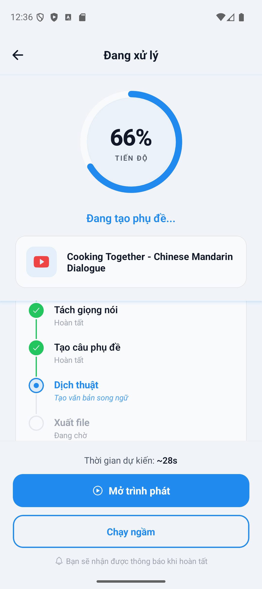
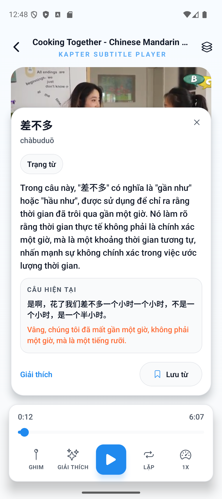

Pipeline thủ công tốn thời gian
Transcript, dịch, căn thời gian và đóng gói subtitle thường phải đi qua nhiều bước rời rạc.
Trọng tâm của đồ án là xây dựng một hệ thống end-to-end hoàn chỉnh: từ ingest media, orchestration backend, pipeline AI, artifact tiến dần cho đến player subtitle song ngữ trên mobile.
Transcript, dịch, căn thời gian và đóng gói subtitle thường phải đi qua nhiều bước rời rạc.
Nếu chỉ sinh output cuối cùng, người dùng không thấy được giá trị trong suốt quá trình xử lý.
Bài toán không chỉ là nhận dạng và dịch, mà còn là queue, artifact, trạng thái bền và trải nghiệm người dùng.
Register, verify OTP, login, refresh, logout và password reset đều tập trung ở backend.
Kiểm tra entitlement ở API layer, rồi kiểm tra lại bằng duration thật ở worker layer.
File media không đi qua body của NestJS; client upload thẳng vào MinIO để giảm tải path HTTP.
Worker chuẩn hóa local upload và YouTube ingest trước khi cho phép tiêu thụ tài nguyên AI.
Validation / ingest / duration / quota
ASR, NMT, artifact generation, progress events
Đi đúng route Distil-Whisper thì transcript có thể đi sang dịch gần như ngay trong lúc ASR đang hoàn tất các phần sau.
Thay vì đẩy dịch sớm bằng mọi giá, hệ thống đi qua SenseVoice Small rồi chặn ở trust gate trước khi cho artifact công khai đi tiếp.
Transcript checkpoints ngay sau ASR
Subtitle song ngữ usable trước final
Canonical output cho replay, reopen và benchmark


Target language: tiếng Việt
Target language: tiếng Việt
Có manual subtitle để tính WER/CER
Timing theo backend polling interval
Latency, ratio wall-clock trên thời lượng media, first chunk, first translated batch, artifact completeness, WER/CER, policy evidence, progressive artifact evidence.
Toàn bộ milestone timing là polling-observed từ backend status polling, không phải timestamp socket hay client tuyệt đối.
Từ ingest media, orchestration, artifact cho đến player song ngữ.
Tách API, worker và AI Engine thay vì dồn toàn bộ vào một service duy nhất.
`chunks`, `translated_batches`, `final.json` giúp hệ thống vừa usable hơn vừa benchmarkable hơn.
Không đánh đổi hoàn toàn chất lượng transcript để lấy output sớm ở những case khó.
Đây là đồ án phát triển ứng dụng phần mềm tích hợp Machine Learning, không phải nghiên cứu huấn luyện mô hình mới.
Dù còn hạn chế, hệ thống đã chạy end-to-end, có benchmark, có artifact chuẩn và có bề mặt sử dụng thật.